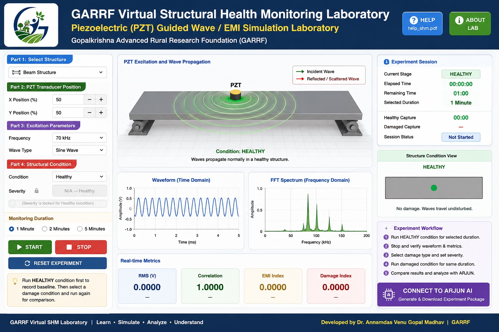

Welcome to a growing virtual engineering laboratory created to give students access to modern engineering experiments, concepts and technology — regardless of where they study.
Advanced engineering equipment and research laboratories can require significant investment, infrastructure and specialist support. Rural students should not be denied exposure to modern engineering simply because their college does not have every facility.
Give students the opportunity to learn virtually first — understand the equipment, experiment, observe the response, analyse the data and become comfortable with technologies that may not yet be available in their physical laboratory.
Our laboratory ecosystem is being developed across multiple engineering and technology disciplines.
SHM, PZT, structures, materials and damage identification.
Robotics, automation, path planning and autonomous systems.
Artificial intelligence, data analysis and intelligent systems.
Circuits, sensors, instrumentation and electronic systems.
Advanced materials, smart materials and engineering applications.
Measurement, sensing, signal acquisition and analysis.
Vehicle systems, intelligent mobility and automotive technology.
PID, automation, feedback and engineering control.
The virtual laboratory is not intended to replace physical experimentation. It is designed to provide knowledge-based exposure, preparation and confidence before students work with real engineering equipment.
Researcher, educator and technology professional leading the GARRF research and rural innovation initiatives.
Contributing technology, creativity and next-generation thinking to the GARRF virtual laboratory initiative.
Today we begin with a growing collection of engineering experiments. Tomorrow, students will be able to explore increasingly advanced virtual research environments.
